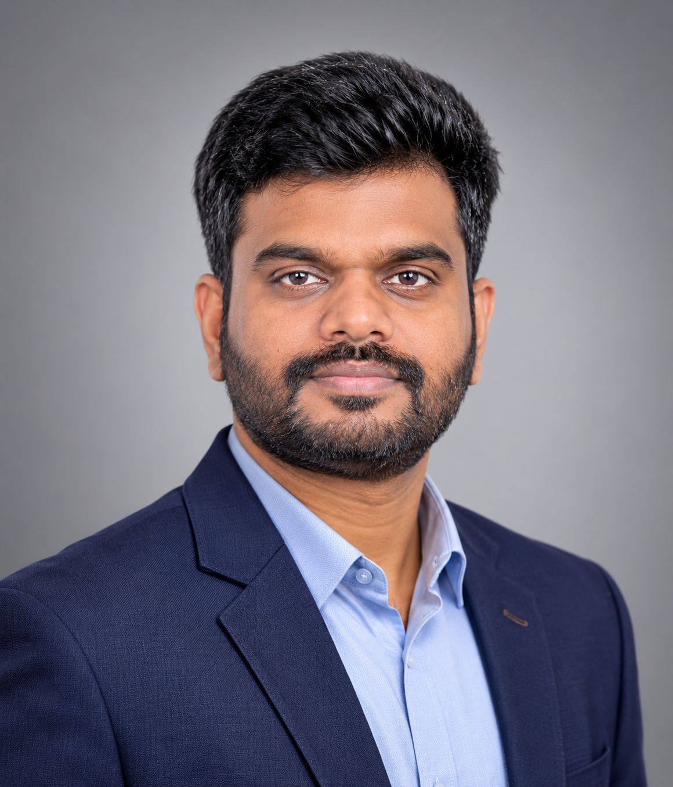

01↗
Renewable Energy
& Microgrids
PV, fuel-cell and battery-integrated microgrids, optimal energy management and resilient operation.
TKM College of Engineering
Kollam, Kerala, India
Exploring intelligent energy systems through renewable microgrids, optimization, artificial intelligence and cyber-physical technologies.

I am an electrical engineering academician working across sustainable energy, intelligent control and emerging digital technologies.
I completed my Ph.D. at Vellore Institute of Technology (VIT), Vellore. My doctoral research focused on the performance analysis of optimal power management and control of microgrids under uncertainties, with an emphasis on renewable-energy-based distributed systems.
My academic interests include microgrid energy management, metaheuristic optimization, machine learning for smart grids, power electronic systems, digital twins and cyber-physical systems. I am also interested in developing engaging, technology-enabled laboratory and learning environments.
Connect for collaboration →Interdisciplinary themes connecting power engineering with intelligent computation and digital technologies.
PV, fuel-cell and battery-integrated microgrids, optimal energy management and resilient operation.
Metaheuristic algorithms, hybrid optimization and adaptive control for uncertain systems.
Data-driven prediction, monitoring, MPPT and decision support for smart energy applications.
Connected physical-digital systems for monitoring, diagnostics and engineering experimentation.
Power conversion, storage coordination and electric vehicle integration in distributed systems.
Virtual, remote and simulation-based laboratories for experiential STEM learning.
A concise overview of academic appointments and qualifications. Add exact dates and earlier degrees before publishing.
Department of Electrical and Electronics Engineering. Teaching, research, student mentoring and academic activities.
Academic and teaching experience in electrical and electronics engineering.
Performance Analysis of Optimal Power Management and Control of Microgrid Under Uncertainties.
Use this section to showcase verified publications, conference contributions and intellectual property.
List journal papers with complete author details, journal, year, indexing and DOI.
Google Scholar ↗Showcase indexed conference papers, oral presentations, invited talks and workshops.
Enquire about collaborations ↗Add patent titles, application or grant numbers, inventors and current status.
Discuss research ↗Teaching interests that bring core engineering principles into contact with current technologies and real-world problems.
Power systems, renewable energy, electrical machines and power electronics.
ML fundamentals, intelligent prediction and data-driven energy applications.
Sensing, embedded systems, connectivity, control and digital engineering.
Student projects, interdisciplinary prototypes and hands-on engineering learning.
Open to research collaboration, academic exchange, student projects and interdisciplinary initiatives.